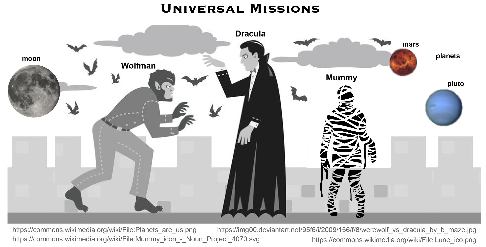

Creating a Repository
Overview
Teaching: 10 min
Exercises: 0 minQuestions
Where does Git store information?
Objectives
Create a local Git repository.
Once Git is configured, we can start using it.
We will continue with the story of Wolfman and Dracula who are investigating if it is possible to send a planetary lander to Mars.

First, let’s create a directory for our work and then move into that directory:
$ mkdir planets
$ cd planets
Then we tell Git to make planets a repository—a place where
Git can store versions of our files:
$ git init
If we use ls to show the directory’s contents,
it appears that nothing has changed:
$ ls
But if we add the -a flag to show everything,
we can see that Git has created a hidden directory within planets called .git:
$ ls -a
. .. .git
Git uses this special sub-directory to store all the information about the project,
including all files and sub-directories located within the project’s directory.
If we ever delete the .git sub-directory,
we will lose the project’s history.
We can check that everything is set up correctly by asking Git to tell us the status of our project:
$ git status
# On branch master
#
# Initial commit
#
nothing to commit (create/copy files and use "git add" to track)
If you are using a different version of git, the exact
wording of the output might be slightly different.
Places to Create Git Repositories
Along with tracking information about planets (the project we have already created), Dracula would also like to track information about moons. Despite Wolfman’s concerns, Dracula creates a
moonsproject inside hisplanetsproject with the following sequence of commands:$ cd # return to home directory $ cd planets # go into planets directory, which is already a Git repository $ ls -a # ensure the .git sub-directory is still present in the planets directory $ mkdir moons # make a sub-directory planets/moons $ cd moons # go into moons sub-directory $ git init # make the moons sub-directory a Git repository $ ls -a # ensure the .git sub-directory is present indicating we have created a new Git repositoryIs the
git initcommand, run inside themoonssub-directory, required for tracking files stored in themoonssub-directory?Solution
No. Dracula does not need to make the
moonssub-directory a Git repository because theplanetsrepository will track all files, sub-directories, and sub-directory files under theplanetsdirectory. Thus, in order to track all information about moons, Dracula only needed to add themoonssub-directory to theplanetsdirectory.Additionally, Git repositories can interfere with each other if they are “nested”: the outer repository will try to version-control the inner repository. Therefore, it’s best to create each new Git repository in a separate directory. To be sure that there is no conflicting repository in the directory, check the output of
git status. If it looks like the following, you are good to go to create a new repository as shown above:$ git statusfatal: Not a git repository (or any of the parent directories): .git
Correcting
git initMistakesWolfman explains to Dracula how a nested repository is redundant and may cause confusion down the road. Dracula would like to remove the nested repository. How can Dracula undo his last
git initin themoonssub-directory?Solution – USE WITH CAUTION!
To recover from this little mistake, Dracula can just remove the
.gitfolder in the moons subdirectory by running the following command from inside theplanetsdirectory:$ rm -rf moons/.gitBut be careful! Running this command in the wrong directory, will remove the entire Git history of a project you might want to keep. Therefore, always check your current directory using the command
pwd.
Key Points
git initinitializes a repository.Git stores all of its repository data in the
.gitdirectory.